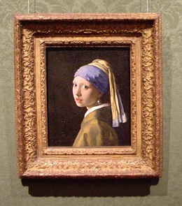

Girl with a Pearl Earring (2003)
maandag 17 januari 2005 | 2 sterren
Aangenaam en rustig kabbelend filmpje over het (vermoedelijke) ontstaan en de inspiratiebron van een portret dat Johannes Vermeer schilderde rond 1650. Beetje vermoeiend en redelijk voorspelbaar, maar daarom niet slecht. Vergelijk deze film met een prent van een zonsopgang in een mistige rivierbedding: niet bepaald spannend, maar... mooooi, ja toch?
Over het schilderij waar deze film echter over gaat, valt blijkbaar heel wat te vertellen. Er bestaan sites die in hun geheel gewijd zijn aan dit meesterwerkje. Ik ken echter geen fluit van schilderkunst, dus het lijkt me best dat ik er nu maar mee ophou.
IMDB: Girl with a Pearl Earring (2003)
“The Girl with a Pearl Earring is universally recognized as one of Johannes Vermeer's absolute masterworks. After more than a century of study, the work still poses significant questions. Who was the sitter and was the painting even intended as a portrait? Why had it remained in complete obscurity until it was rediscovered in 1882 and sold for the price of a reproduction? Was it a part of a pendant? Did Vermeer sell the painting during his lifetime? Why was the original background a deep transparent green rather than the black we see today? Was the pearl a real one? What significance did the turban have? Which painting procedures did Vermeer employ? Which pigments did he use?”
